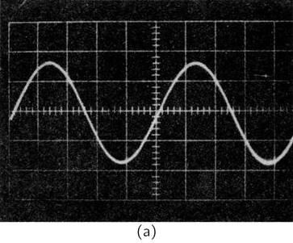
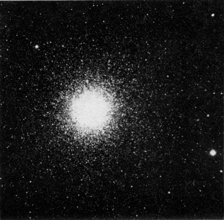
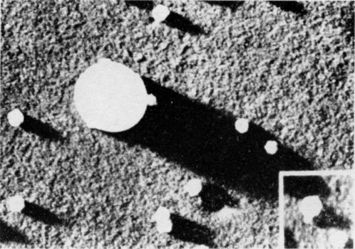

5. Время и расстояние
5–1 Движение#
В этой главе мы рассмотрим некоторые аспекты понятий времени и расстояния. Ранее уже подчеркивалось, что физика, как и все остальные науки, зависит от наблюдений. Можно также сказать, что развитие физических наук до их современного состояния в огромной степени зависело от внимания, уделявшегося проведению количественных наблюдений. Только с помощью количественных наблюдений можно прийти к количественным соотношениям, которые составляют сердце физики.
Многие считают, что физика берет свое начало с опыта, проведенного Галилеем 350 лет назад, а сам Галилей является первым физиком. До этого времени изучение движения было чисто философским и основывалось на доводах, которые были плодом фантазии. Большинство этих доводов были придуманы Аристотелем и другими греческими философами и рассматривались как «доказанные». Но Галилей был скептиком и поставил опыт по изучению движения, суть которого заключалась в следующем: он пускал шар по наклонному желобу и наблюдал за его движением. Однако он не просто смотрел; он измерял то расстояние, которое прошел шар, и определял время, в течение которого шар проходил это расстояние.
Способ измерения расстояний был хорошо известен еще задолго до Галилея, однако точного способа измерения времени, особенно коротких интервалов, не было. Хотя впоследствии Галилей изобрел более совершенные часы (отнюдь не похожие на современные), но в своих первых опытах для отсчета равных промежутков времени он использовал собственный пульс. Давайте сделаем то же самое.
Будем отсчитывать удары пульса в то время, как шарик катится вниз: «Один... два... три... четыре... пять... шесть... семь... восемь...». Пусть кто-нибудь отмечает положение шарика на каждый счет. Теперь можно измерить расстояние, которое шарик прошел за один, два, три и т. д. равных интервала времени. Галилей сформулировал результат своих наблюдений следующим образом: если отмечать положения шарика через 1, 2, 3, 4, … единицы времени от начала движения, то окажется, что эти отметки удалены от начального положения пропорционально числам 1, 4, 9, 16, … Сейчас мы сказали бы, что расстояние пропорционально квадрату времени:
Изучение движения, лежащее в основе всей физики, рассматривает вопросы: где? и когда?
5–2 Время#
Разберем сначала, что мы понимаем под словом время. Что же это такое? Неплохо было бы найти подходящее определение понятия «время». Вебстер определяет «время» как «период», а последний — как «время», что, по-видимому, не слишком полезно. Пожалуй, можно сказать так: «Время — это то, что происходит, когда больше ничего не происходит». Что тоже не слишком продвигает нас вперед. Быть может, следует признать тот факт, что время — это одна из тех вещей, которые мы, вероятно, не можем определить (в словарном смысле), и просто сказать, что это то, о чем мы и так знаем: это то, сколько мы ждем!
Дело, однако, не в том, как дать определение понятия «время», а в том, как его измерить. Один из способов измерить время — это использовать нечто регулярно повторяющееся, нечто периодическое. Например, день. Казалось бы, дни регулярно следуют один за другим. Но, поразмыслив немного, сталкиваешься с вопросом: периодичны ли они? Все ли дни имеют одинаковую длительность? Создается впечатление, что летние дни длиннее зимних. Впрочем, некоторые зимние дни кажутся ужасно длинными, особенно если они скучны. О них обычно говорят: «Ужасно длинный день»!
Однако, по-видимому, все сутки в среднем одинаковы. Можно ли проверить, действительно ли они одинаковы и от одного дня до другого, хотя бы в среднем, проходит ли одно и то же время? Один из способов — произвести сравнение с каким-то другим периодическим процессом. Давайте посмотрим, как такое сравнение можно провести с помощью песочных часов. С помощью песочных часов мы можем «создать» периодический процесс, если будем стоять возле них день и ночь и переворачивать их каждый раз, когда высыпятся последние крупинки песка.
Тогда мы могли бы подсчитать число переворачиваний песочных часов от каждого утра до следующего. На этот раз мы бы обнаружили, что число «часов» (т. е. переворачиваний песочных часов) в каждый «день» различно. Нам следовало бы не доверять Солнцу, или часам, или и тому и другому. После некоторых размышлений нам может прийти в голову считать «часы» от полудня до полудня. (Полдень здесь определяется не как 12 часов, а как момент, когда Солнце находится в наивысшем положении.) На этот раз мы бы обнаружили, что число «часов» каждый день одинаково.
Теперь можно утверждать, что «час» и «сутки» имеют регулярную периодичность, т. е. отмечают последовательные равные интервалы времени, хотя нами и не доказано, что каждый из процессов действительно периодичен. Нас могут спросить: а вдруг есть некое всемогущее существо, которое замедляет течение песка ночью и убыстряет днем? Наш эксперимент, конечно, не может дать ответа на такого рода вопросы. Очевидно лишь то, что периодичность одного процесса согласуется с периодичностью другого. Поэтому при определении понятия «время» мы просто будем исходить из повторения некоторых очевидно периодических событий.
5–3 Короткие времена#
Заметим теперь, что в процессе проверки «воспроизводимости» дня мы получили важный побочный результат. Мы нашли способ более точного измерения долей дня. Мы нашли способ отсчитывать время меньшими частями. Нельзя ли этот процесс продолжить и научиться измерять еще меньшие промежутки времени?
Галилей предположил, что каждый маятник отклоняется и возвращается назад за равные интервалы времени (если отклонения невелики). Сравнение числа отклонений маятника с «часом» показывает, что это действительно так. Таким способом можно измерять доли «часа». Если для подсчета колебаний маятника — и для поддержания их — применить механическое устройство, то мы получим маятниковые часы наших дедов.
Договоримся теперь, что если наш маятник отклонится 3600 раз в час (и если в сутках 24 таких часов), то каждый период колебаний маятника мы назовем «секундой». Итак, нашу первоначальную единицу времени мы разделили приблизительно на 10^5 частей. Используя те же принципы, можно разделить секунду на все меньшие и меньшие интервалы. Вы, конечно, понимаете, что практически невозможно делать механические маятники, колеблющиеся сколь угодно быстро, но мы можем теперь делать электрические маятники, называемые осцилляторами, которые могут обеспечивать периодический процесс с очень коротким периодом колебаний. В таких электронных осцилляторах именно электрический ток течет то в одном, то в другом направлении, аналогично колебаниям груза маятника.
Мы можем создать ряд таких электронных осцилляторов, причем период каждого последующего в 10 раз меньше предыдущего. Мы можем «калибровать» каждый осциллятор по следующему, более медленному, подсчитывая число его колебаний за одно колебание более медленного осциллятора. Если период колебаний наших часов меньше доли секунды, мы не можем подсчитать колебания без помощи устройства, расширяющего возможности наблюдения. Одним из таких устройств является электронно-лучевой осциллограф, служащий своего рода «микроскопом времени». Это устройство строит на светящемся экране график зависимости электрического тока (или напряжения) от времени. Соединяя осциллограф последовательно с двумя нашими осцилляторами так, чтобы он сначала строил график тока в одном осцилляторе, а затем в другом, мы получим два графика, подобные показанным на фиг. 5.2. Мы можем легко определить число периодов более быстрого осциллятора в одном периоде более медленного.

Современная электроника позволяет создавать осцилляторы с периодами около 10^{-12} сек, которые выверяются (калибруются) методом сравнения, подобным вышеописанному, на стандартную единицу времени — секунду. В последние несколько лет в связи с изобретением и усовершенствованием «лазера», или усилителя света, появилась возможность сделать осцилляторы с еще более коротким периодом, чем 10^{-12} сек, но пока еще невозможно калибровать их описанными методами, хотя, несомненно, это скоро будет возможно.
Были измерены промежутки времени, более короткие, чем 10^{-12} сек, но другим методом. В сущности, используется другое определение понятия «время». Один из способов состоит в измерении расстояния между двумя событиями на движущемся объекте. Если, например, фары движущегося автомобиля сначала включают, а затем выключают, мы можем вычислить, сколько времени они горели, если знаем, где они были включены и выключены и с какой скоростью двигался автомобиль. Время равно расстоянию, на протяжении которого горели фары, разделенному на скорость.
Именно таким методом в последние годы измерялось время жизни \pi^0 -мезона. При наблюдении в микроскоп мельчайших следов, оставленных на фотоэмульсии, в которой родились \pi^0 -мезоны, было видно, что \pi^0 -мезон (о котором известно, что он движется со скоростью, близкой к скорости света) проходит в среднем расстояние около 10^{-7} м, прежде чем распасться. Он жил всего лишь около 10^{-16} сек. Необходимо подчеркнуть, что здесь было использовано несколько другое определение понятия «время», чем прежде. Однако, пока в нашем понимании нет противоречий, мы можем быть вполне уверены в том, что наши определения в достаточной мере эквивалентны.
Развивая нашу технику — а если необходимо, и наши определения — еще дальше, мы можем судить о длительности еще более быстрых физических процессов. Мы можем говорить о периоде колебаний ядра. Мы можем говорить о времени жизни недавно обнаруженных «странных» резонансов (частиц), упоминавшихся в главе 2. Их полная жизнь занимает промежуток времени всего лишь в 10^{-24} сек — приблизительно столько времени требуется свету (который движется с наибольшей из известных скоростей), чтобы пересечь ядро водорода (наименьший из известных объектов).
Что можно сказать о еще более коротких интервалах времени? Существует ли «время» на еще меньших масштабах? Имеет ли смысл вообще говорить о меньших интервалах времени, если мы не можем измерить — или, быть может, даже разумно судить о том, что происходит в течение более короткого времени? Возможно, нет. Это некоторые из тех открытых вопросов, которые вы будете задавать и, быть может, на которые ответите в ближайшие 20—30 лет.
5–4 Большие времена#
Рассмотрим теперь промежутки времени, большие «суток». Измерять большие времена легко: нужно просто считать дни — пока есть кому их считать. Первое, с чем мы сталкиваемся, это еще одна естественная периодичность: год, приблизительно 365 дней. Мы также обнаружили, что природа иногда сама предоставляет счетчик лет в виде годовых колец у деревьев или отложений речного ила. В некоторых случаях мы можем использовать эти естественные отметки времени для определения времени, прошедшего с какого-либо давнего события.
Когда мы не можем считать годы для измерения больших промежутков времени, мы должны искать другие способы измерения. Одним из наиболее успешных методов является использование в качестве «часов» радиоактивного вещества. В этом случае мы имеем дело не с периодическим явлением, как в случае суток или маятника, а с новым видом «регулярности». Мы обнаруживаем, что радиоактивность определенного образца вещества уменьшается в одно и то же число раз за равные последовательные промежутки времени. Если начертить график зависимости наблюдаемой радиоактивности от времени (скажем, в днях), то мы получим кривую типа изображенной на фиг. 5.3. Мы видим, что если радиоактивность уменьшается вдвое за T дней (называемый «периодом полураспада»), то она уменьшается до одной четверти еще через T дней и так далее. В произвольном интервале времени t содержится t/T «периодов полураспада», и доля, оставшаяся после этого времени t, составляет (\frac{1}{2})^{t/T}.
Если бы мы знали, что какой-то материал, скажем кусок дерева, при своем образовании содержал количество A радиоактивного вещества, а прямые измерения показали бы, что теперь он содержит количество B, то мы могли бы вычислить возраст этого предмета t, решив уравнение
К счастью, существуют случаи, когда мы можем знать количество радиоактивного вещества, находившегося в предмете при его образовании. Мы знаем, например, что углекислый газ в воздухе содержит определенную малую долю радиоактивного изотопа углерода C ^{14} (постоянно пополняемого благодаря действию космических лучей). Если мы измеряем полное содержание углерода в предмете, то знаем, что определенная доля этого количества первоначально была радиоактивным C ^{14}; следовательно, нам известно первоначальное количество A для использования в приведенной выше формуле. Период полураспада углерода-14 составляет 5000 лет. Путем точных измерений мы можем определить количество, оставшееся примерно после 20 периодов полураспада, и, следовательно, «датировать» органические объекты, жившие еще 100{,}000 лет назад.
Хотелось бы, однако, узнать возраст еще более древних вещей (и мы думаем, что знаем его). Большая часть наших знаний основана на измерениях других радиоактивных изотопов с другими периодами полураспада. Если проводить измерения с помощью изотопа с бо́льшим периодом полураспада, мы сможем измерять более длительные промежутки времени. Уран, например, имеет изотоп с периодом полураспада около 10^9 лет, так что если какой-то материал при своем образовании 10^9 лет назад содержал уран, то сегодня от него осталась бы только половина первоначального количества. При своем распаде уран превращается в свинец. Рассмотрим кусок горной породы, который образовался много лет назад в результате какого-то химического процесса. Свинец по своим химическим свойствам отличается от урана, поэтому свинец должен был оказаться в одной части породы, а уран — в другой. Уран и свинец были разделены. Если посмотреть на этот кусок породы сегодня, то там, где должен был быть только уран, мы обнаружим некоторую долю урана и некоторую долю свинца. Сравнивая эти доли, можно определить, какой процент урана исчез и превратился в свинец. Этим методом было установлено, что возраст некоторых горных пород составляет несколько миллиардов лет. Применение этого метода в более широком масштабе — путем исследования содержания урана и свинца не в отдельных горных породах, а в океанах с последующим усреднением данных по всей Земле — позволило установить (за последние несколько лет), что возраст самой Земли составляет примерно 4.5 миллиарда лет.
Отрадно, что возраст Земли совпадает с возрастом метеоритов, падающих на Землю, вычисленным по урановому методу. По-видимому, Земля образовалась из пород, «плававших» в пространстве, а метеориты, по всей вероятности, представляют собой остатки этого материала. Некогда, более 5 миллиардов лет назад, возникла Вселенная. Сейчас считают, что по крайней мере наша часть Вселенной возникла примерно 10—12 миллиардов лет назад. Нам неизвестно, что было до этого. В сущности, мы вполне можем спросить себя еще раз: имеет ли вообще смысл этот вопрос? Имеет ли какое-то значение более раннее время?
5–5 Единицы и стандарты времени#
Мы уже говорили, что счет времени удобно вести в каких-то стандартных единицах, скажем в днях или секундах, и измерять длительности в количествах этой единицы или ее долях. Но что же выбрать за основную стандартную единицу? Можно ли, например, принять за отправную единицу человеческий пульс? Очевидно, нет. Уж очень непостоянна эта единица. Лучше обстоит дело с часами. Двое часов согласуются гораздо лучше, чем пульс. Вы скажете: ладно, давайте возьмем часы. Но чьи? Существует предание об одном швейцарском мальчике, которому хотелось, чтобы все часы в его городе отзванивали полдень и в одно и то же время. Он ходил по городу и доказывал всем, насколько это важно. Каждый считал, что это действительно было бы чудесно, если бы все другие часы в городе звонили полдень по его часам! В самом деле, очень трудно решить, чьи же часы мы должны выбрать в качестве стандарта. К счастью, существуют часы, которые признают все,— это наша Земля. Долгое время в качестве стандарта выбирался период вращения Земли. Однако по мере того, как измерения становились все более точными, обнаруживалось, что вращение Земли не строго периодично, если сравнивать его с лучшими часами. А этим «лучшим часам» можно доверять, ибо они согласуются друг с другом. Сейчас известно, что по разным причинам одни дни оказываются длиннее других и, кроме того, средний период вращения Земли на протяжении столетий несколько удлиняется.
Вплоть до самого последнего времени не было найдено ничего более точного, чем вращение Земли, и поэтому все часы сверялись с длиной астрономических суток, а секунда определялась как 1/86{,}400 часть средних суток. В последнее время мы научились работать с некоторыми естественными осцилляторами, которые, как мы теперь полагаем, дают более стабильный стандарт времени, чем Земля, и которые также основаны на природном явлении, доступном каждому. Это так называемые «атомные часы». Их основной внутренний период — это период колебаний атома, который крайне мало чувствителен к температуре и другим внешним воздействиям. Эти часы идут с точностью до одной части на 10^9 или еще лучше. В последние два года профессор Гарвардского университета Норман Рамзей спроектировал и построил улучшенные атомные часы, работающие на колебаниях атомов водорода. Он считает, что эти часы могут быть еще в 100 раз более точными. Сейчас ведутся измерения, которые покажут, насколько он прав.
Можно ожидать, что поскольку оказалось возможным создать часы гораздо более точные, чем астрономическое время, вскоре ученые договорятся определять единицу времени с помощью одного из стандартов атомных часов.
5–6 Большие расстояния#
Вернемся теперь к вопросу о расстоянии. Как далеко отстоят от нас окружающие предметы и как велики они? Всем известно, что для измерения расстояния нужно взять какую-то единицу длины и считать, сколько этих единиц укладывается на данном отрезке. Но как измерить те предметы, которые меньше единицы длины? Как подразделить выбранную единицу длины? А точно так же, как и время: мы берем меньшую единицу длины и считаем, сколько таких единиц укладывается в большей. Таким методом мы сможем измерять все меньшие и меньшие длины.
Однако под расстоянием мы не всегда понимаем то, что получается при отмеривании метром. Было бы трудно измерить расстояние по горизонтали между вершинами двух гор, пользуясь только метром. Мы знаем из опыта, что расстояние можно измерить другим способом — с помощью триангуляции. Хотя это означает, что мы на самом деле используем другое определение расстояния, в тех случаях, когда можно применить оба метода, они согласуются друг с другом. Пространство все же более или менее соответствует представлениям Евклида, поэтому оба типа определений расстояния согласуются. А раз они согласуются на Земле, это дает нам некоторую уверенность в использовании триангуляции для еще больших расстояний. Например, с помощью триангуляции удалось измерить высоту первого спутника. Она оказалась равной приблизительно 5\times10^5 метров. При большей тщательности измерений тем же самым методом можно измерить расстояние до Луны. Два телескопа в различных точках Земли могут дать нам два необходимых угла. Таким путем было найдено, что Луна удалена от нас на расстояние 4\times10^8 метров.
Однако для Солнца таких измерений провести нельзя, по крайней мере до сих пор никому не удавалось. Дело в том, что точность, с которой можно сфокусировать телескоп на данную точку Солнца и с которой можно измерить углы, не достаточна для вычисления расстояния до Солнца. Как же все-таки определить его? Необходимо как-то расширить принцип триангуляции. Астрономические наблюдения позволяют измерить относительное расстояние между планетами и Солнцем и определить их относительное расположение. Таким образом, мы получаем план солнечной системы в неизвестном масштабе. Чтобы определить масштаб, требуется только одно абсолютное расстояние, которое было найдено многими различными способами. Один из способов, считавшийся до самого последнего времени наиболее точным, заключается в определении расстояния от Земли до Эроса — малой планеты, которая по временам проходит недалеко от Земли. С помощью триангуляции можно определить расстояние до этого небольшого объекта и получить необходимый масштаб. Зная относительные расстояния, можно определить, например, все абсолютные расстояния от Земли до Солнца или до планеты Плутон.
В последний год достигнуты большие успехи в определении масштаба солнечной системы. В Лаборатории ракетных двигателей с помощью прямой радиолокационной связи были проведены очень точные измерения расстояния от Земли до Венеры. Это, конечно, еще один тип косвенного определения расстояния. Мы говорим, что нам известна скорость распространения света (а стало быть, и скорость распространения радиоволн), и предполагаем, что эта скорость постоянна на всем протяжении между Землей и Венерой. Мы посылаем радиоволну и считаем время до возвращения отраженной волны. По этому времени мы находим расстояние, предполагая, что скорость нам известна. Фактически здесь мы имеем дело еще с одним определением понятия «расстояние».
А как измерить расстояние до звезды, которая находится гораздо дальше? К счастью, здесь снова можно возвратиться к нашему методу триангуляции, ибо движение Земли вокруг Солнца дает нам большую базу для измерения расстояний до объектов, находящихся вне солнечной системы. Если мы направим телескоп на звезду летом и зимой, то можно надеяться достаточно точно определить эти два угла, чтобы измерить расстояние до нее.

Но что делать, если звезда находится настолько далеко от нас, что уже невозможно пользоваться методом триангуляции? Астрономы всегда изобретают все новые и новые способы определения расстояний. Так, они научились определять размер и яркость звезд по их цвету. Оказалось, что цвет и истинная яркость многих близлежащих звезд, расстояние до которых определялось методом триангуляции, в большинстве случаев связаны между собой гладкой зависимостью. Если теперь измерить цвет отдаленной звезды, то по этой зависимости можно определить ее истинную яркость, а измеряя видимую яркость звезды (вернее, по тому, насколько звезда нам кажется тусклой), можно вычислить расстояние до нее. (Для данной истинной яркости видимая яркость уменьшается как квадрат расстояния.) Правильность этого метода нашла неожиданное подтверждение в результатах измерений, проведенных для группы звезд, известных под названием «шарового скопления». Фотография этой группы звезд приведена на фиг. 5.6. Достаточно взглянуть на фотографию, чтобы убедиться, что все эти звезды расположены в одном месте. Тот же результат получается и с помощью метода сравнения цвета и яркости.

Изучение многих шаровых скоплений дает еще одну важную информацию. Оказалось, что существует участок неба с большой концентрацией таких шаровых скоплений, причем большинство из них находится на одном и том же расстоянии от нас. Сравнивая эти данные с некоторыми другими, мы приходим к заключению, что эти скопления являются центром нашей Галактики. Таким образом, мы определяем, что расстояние до центра Галактики составляет приблизительно 10^{20} м.
Данные о размере нашей Галактики дают ключ к определению еще больших межгалактических расстояний. На фиг. 5.7 приведена фотография галактики, которая по форме очень похожа на нашу Галактику. Возможно, что и размер ее тот же. (Есть еще ряд соображений, согласно которым размеры всех галактик приблизительно одинаковы.) А если это так, то можно узнать расстояние до нее. Мы измеряем угловой размер галактики (т. е. угол, который она занимает на небесном своде), знаем ее диаметр, а стало быть, можем вычислить расстояние. Опять та же триангуляция!

Недавно с помощью гигантского Паломарского телескопа были получены фотографии неимоверно далеких галактик. Одна из них приведена на фиг. 5.8. Сейчас полагают, что некоторые из этих галактик находятся примерно на половине расстояния до границы Вселенной — на расстоянии 10^{26} метров — наибольшего расстояния, которое мы можем себе представить!

5–7 Малые расстояния#
Обратимся теперь к малым расстояниям. Подразделить метр просто. Без особых трудностей можно разделить его на тысячу равных частей. Таким же путем, хотя и несколько сложнее (используя хороший микроскоп), можно разделить миллиметр на тысячу частей и получить микрон (миллионную долю метра). Однако продолжать это деление становится трудно, поскольку невозможно «увидеть» объекты, меньшие, чем длина волны видимого света (около 5\times10^{-7} м).

Все же мы не останавливаемся на том, что доступно глазу. С помощью электронного микроскопа можно получить фотографии, помогающие увидеть и измерить еще меньшие объекты — вплоть до 10^{-8} м (фиг. 5.9). А с помощью косвенных измерений (своего рода триангуляции в микроскопическом масштабе) можно измерять все меньшие и меньшие объекты. Сначала из наблюдений отражения света короткой длины волны (рентгеновских лучей) от образца с нанесенными на известном расстоянии метками измеряется длина волны световых колебаний. Затем по картине рассеяния того же света на кристалле можно определить относительное расположение в нем атомов, причем результат хорошо согласуется с данными о расположении атомов, полученными химическим путем. Таким способом определяется диаметр атомов (около 10^{-10} м).
В физических размерах имеется большая «щель» между характерными атомными размерами около 10^{-10} метра и ядерными размерами 10^{-15} метра, которые в 10^{-5} раз меньше. Для ядерных размеров становится удобным другой способ измерения. Мы измеряем видимую площадь, \sigma, называемую эффективным поперечным сечением. Если мы хотим найти радиус, то можем получить его из \sigma=\pi r^2, поскольку ядра почти сферические.
Измерение эффективного сечения ядра можно произвести, пропуская пучок частиц высокой энергии через тонкую пластинку вещества и измеряя число частиц, не прошедших сквозь нее. Эти высокоэнергетические частицы прорываются сквозь легкое облачко электронов, но при попадании в тяжелое ядро останавливаются или отклоняются. Предположим, что у нас имеется пластинка вещества толщиной 1 сантиметр. В ней будет около 10^8 атомных слоев. Однако ядра настолько малы, что вероятность того, что одно ядро закроет другое, очень незначительна. Можно себе представить, что картина этой ситуации при сильном увеличении — если смотреть вдоль пучка частиц — будет выглядеть так, как на фиг. 5.10.
Вероятность того, что очень малая частица при прохождении столкнется с ядром, равна просто отношению всей площади, закрываемой контурами ядер, к общей площади рисунка. Предположим, мы знаем, что на площади A нашей пластинки материала находится N атомов (разумеется, каждый с одним ядром). Тогда доля площади, «закрытая» ядрами, равна N\sigma/A. Пусть теперь число частиц нашего пучка, попадающих на пластинку, равно n_1, а число частиц, выходящих с другой стороны, равно n_2. Доля не прошедших частиц составляет (n_1-n_2)/n_1, что должно быть как раз равно доле закрытой площади. Мы можем получить радиус ядра из уравнения 1
Из такого эксперимента мы находим, что радиусы ядер составляют приблизительно от 1 до 6, умноженных на 10^{-15} метра. Единица длины 10^{-15} метра называется ферми в честь Энрико Fermi (1901–1954).
Что можно ожидать в области еще меньших расстояний? Можно ли их измерять? На эти вопросы пока еще нет ответа. Может быть, именно здесь, в каком-то изменении понятия пространства или измерения на малых расстояниях, кроется разгадка тайны ядерных сил.
Может показаться, что было бы разумно использовать в качестве единицы длины какую-то естественную длину — например, радиус Земли или некоторую его долю. Первоначально метр задумывался именно как такая единица и определялся как (\pi/2)\times10^{-7} доля радиуса Земли. Такой способ определения единицы длины нельзя считать ни удобным, ни особенно точным. В течение долгого времени по международному соглашению метр определялся как расстояние между двумя метками на брусе, хранящемся в специальной лаборатории во Франции. Однако позднее было осознано, что это определение не столь точно, как это необходимо, и не так постоянно и универсально, как хотелось бы. В настоящее время рассматривается вопрос о принятии нового определения — некоторого заранее установленного (произвольного) числа длин волн выбранной спектральной линии.
Результаты измерения расстояний и времени зависят от наблюдателя. Два наблюдателя, движущиеся друг относительно друга, измеряя один и тот же предмет или длительность одного и того же процесса, получат разные значения, хотя, казалось бы, мерили одно и то же. Расстояния и интервалы времени в зависимости от системы координат (т. е. системы отсчета), в которой производят измерения, имеют различную величину. В последующих главах мы будем более подробно разбирать этот вопрос.
Законы природы не позволяют выполнять абсолютно точные измерения расстояний или интервалов времени. Мы уже упоминали ранее, что ошибки при измерении положения предмета должны быть не меньше, чем
где \hbar — малая фундаментальная физическая константа, называемая приведенной постоянной Планка, а \Delta p — ошибка в наших знаниях об импульсе (произведении массы на скорость) предмета, положение которого мы измеряем. Также упоминалось, что неопределенность в измерении положения связана с волновой природой частиц.
Относительность пространства и времени приводит к тому, что измерения интервалов времени также не могут быть точнее, чем
где \Delta E — ошибка в измерении энергии того процесса, продолжительность которого мы измеряем. Чтобы знать более точно, когда что-то произошло, мы вынуждены довольствоваться тем, что меньше знаем, что же именно произошло, поскольку наши знания об энергии, участвующей в процессе, будут менее точными. Эта неопределенность времени также связана с волновой природой вещества.